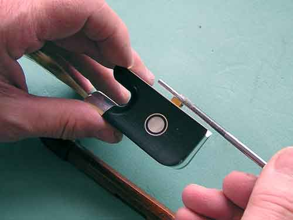

All bows and their screws must be lubricated regularly at least once a year.
One of the best ways is using a grease stick.
They are available in most local hardware stores.
You may also use soft paraffin from your a candle or graphite lubricants.
